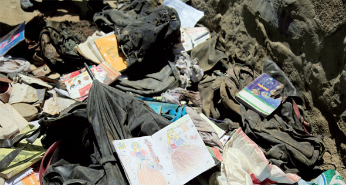

الأثنين
28 من رمضان 1442 هــ 10 مايو 2021
29℃ القاهرة, مصر
بيانات الطالب
| مصر | العالم | تكنولوجيا | رياضة | كاريكاتير |
الرئيس الأفغانى يتهم «طالبان» بتنفيذ هجوم كابول.. والحركة تنفى

بينما أعلن مسئولون أفغان ارتفاع قتلى الانفجار أمام
مدرسة للبنات فى "كابول" إلى ٥٨ شخصا، يبذل الأطباء جهودا مضنية، لتوفير الرعاية
الطبية لنحو ١٥٠ مصابا آخرين. فى الوقت نفسه، اتهم الرئيس الأفغانى، أشرف غنى، حركة
"طالبان" بتنفيذ الهجوم، لكن متحدثا باسم الحركة نفى أى دور لـ"طالبان"، وقال إن
الحركة تندد بأى هجمات على المدنيين الأفغان.
وقد هزت انفجارات، أمس الأول، حى "داشت برشى" غرب كابول، الذى يسكنه أغلبية الشيعة،
ويشكل هدفا دائما للمسلحين.
يأتى هذا الهجوم بينما يواصل الجيش الأمريكى سحب آخر ٢٥٠٠ جندى من أفغانستان، التى
تمزقها أعمال عنف، على الرغم من جهود السلام المتعثرة بين "طالبان" والحكومة
الأفغانية، لإنهاء حرب استمرت عقودا. وفى حديثه عن الاعتداء، أوضح المتحدث باسم
وزارة الداخلية، طارق عريان، أمس، أن سيارة مفخخة انفجرت أمام مدرسة "سيد الشهداء"،
أمس الأول، وعندما اندفعت الطالبات فى حالة ذعر انفجرت قنبلتان أخريان. وأضاف أن
معظم الضحايا من الطالبات. وقعت التفجيرات بينما كان سكان الحى يتسوقون قبل عيد
الفطر، الذى يصادف الأسبوع المقبل، ولم تعلن أى جماعة مسئوليتها عن الهجوم حتى
الآن، لكن المسئولين الأفغان، بمن فيهم الرئيس أشرف غنى، حملوا "طالبان" مسئولية
الهجوم. وقال الرئيس غنى، فى بيان بعد التفجيرات: "هذه المجموعة المتوحشة لا تملك
القوة لمواجهة قوات الأمن فى ساحة المعركة، وبدلا من ذلك تستهدف بوحشية منشآت عامة
ومدرسة البنات". كما أفاد المتحدث باسم وزارة الداخلية: "طالبان" تقف وراء هذا
الهجوم. لقد نفذت هجمات مماثلة على مؤسسات تعليمية فى الماضى. ونفت "طالبان"
تورطها، وتؤكد أنها لم تشن أى هجوم فى "كابول" منذ فبراير من العام الماضى، عندما
وقعت اتفاقا مع الولايات المتحدة الأمريكية مهد الطريق لمحادثات سلام، وانسحاب
القوات الأمريكية المتبقية فى البلاد، لكن مقاتلى الحركة يخوضون معارك شبه يومية مع
القوات الأفغانية فى المناطق الريفية الوعرة، حتى بعد تقليص الجيش الأمريكى وجوده.